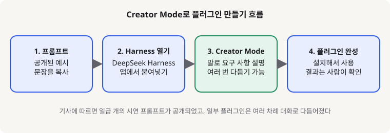
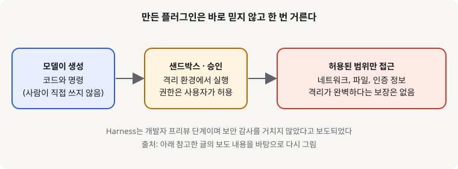

DeepSeek Harness Creator Mode: 대화로 AI 플러그인을 만드는 기능, 입문 개발자가 알아야 할 것
- DeepSeek의 에이전트 플랫폼 Harness에 Creator Mode가 추가되었다는 소식이 11월 2일부터 4일 사이 여러 매체에 보도되었다.
- 코드를 직접 짜는 대신 원하는 기능을 문장으로 설명하면 플러그인을 만들어 주고, 일부 결과는 대화를 거듭해 다듬는 방식이다.
- 입문 개발자에게는 AI에게 기능을 설명하는 연습장이 되지만, 만든 플러그인은 권한과 보안을 확인한 뒤 쓰는 것이 좋다.
DeepSeek가 Harness라는 에이전트 플랫폼에 Creator Mode를 붙였다. 여러 보도에 따르면 사용자는 "이런 기능이 있는 플러그인을 만들어 줘"처럼 평범한 문장으로 요청하면 되고, 플러그인이 완성되면 Harness에 설치해 쓸 수 있다. 개발자 커뮤니티가 주목한 지점은 플러그인 제작의 진입 장벽이 코드에서 대화로 내려왔다는 것이다.
01한눈에 보기
식당에 "매운 것 말고 해산물이 들어간 메뉴를 하나 만들어 주세요"라고 말하면 주방이 새 메뉴 카드를 내놓는 것과 비슷하다. Creator Mode에서 만드는 플러그인도 그런 카드에 가깝다. 에이전트(목표를 받아 여러 단계를 스스로 처리하는 AI 프로그램)에 새로운 능력을 하나 붙이는 작은 부품이다. 그림 1의 흐름처럼 예시 문장을 가져와 Harness에서 Creator Mode를 고르고, 원하는 기능을 설명하면 된다.

02어떻게 동작하나요
입력, 처리, 출력 순서로 보면 이해가 쉽다. 입력은 "이런 화면을 보여 주는 플러그인"처럼 원하는 기능을 설명한 문장이다. 처리 단계에서는 모델이 플러그인에 필요한 코드와 설정을 만든다. 보도에 따르면 일부 플러그인은 한 번에 완성되지 않아서 여러 차례 대화로 고쳐 나간 결과였다. 출력은 Harness에 설치해 사용할 수 있는 플러그인이다.
위키트리 보도에 따르면 Creator Mode는 9월 릴리스 노트부터 언급되었고, 10월 3일 프리뷰 버전에서 플러그인 관리 화면에 "Let Agent create a plugin" 항목이 생겼다. 다만 이 기사 역시 메뉴 이름과 흐름을 전하는 수준이라, 실제 화면은 직접 확인하는 것이 안전하다.

03왜 지금 화제인가요
DeepSeek는 Creator Mode를 데모 중심으로 공개했다. 여러 매체가 공통으로 전한 내용은 "자연어로 플러그인을 만든다"는 점과, 디자인 작업 공간, 영상 편집기, 3D 시각화처럼 결과물이 눈에 보이는 예시를 함께 보여 주었다는 점이다.
04관련 나라·기업
| 구분 | 이름 | 어떤 관련이 있나 |
|---|---|---|
| 기업 | DeepSeek | Harness와 Creator Mode를 공개한 개발사 |
| 나라 | 중국 | DeepSeek 본사가 있는 나라 |
05기존 방식과 무엇이 다른가
| 비교 항목 | 기존 방식 | Creator Mode |
|---|---|---|
| 만드는 방법 | 개발자가 코드를 직접 작성한다 | 원하는 기능을 문장으로 설명한다 |
| 고치는 방법 | 코드를 찾아 수정한다 | "이 부분만 바꿔 줘"처럼 대화로 다듬는다 |
| 확인 방법 | 코드 리뷰와 테스트 | 결과를 실행해 보고, 권한과 보안 설정을 함께 확인해야 한다 |
06직접 해 보기
아래는 보도 내용을 바탕으로 한 첫 걸음이다. DeepSeek 공식 저장소와 프롬프트 모음 페이지는 이번 작성 과정에서 직접 열어 확인하지 못했으므로, 실제 메뉴 이름과 설치 명령은 공식 문서에서 다시 확인하기 바란다.
1. 예시 프롬프트 고르기
기사에서 소개된 DeepSeek의 공식 프롬프트 모음에서 가장 단순한 예시 하나를 고른다. 처음에는 화면에 글자 하나만 보여 주는 정도의 작은 기능이 좋다.
2. Harness에서 플러그인 메뉴 찾기
Harness 앱에서 플러그인 관리 화면을 열고, 에이전트에게 플러그인을 만들게 하는 항목을 찾는다. 메뉴 이름은 버전마다 다를 수 있다.
3. 한 문장으로 요청하고 결과 읽기
Creator Mode를 고른 뒤 원하는 기능을 한두 문장으로 적는다. 만들어진 플러그인이 무엇을 하는지 설명을 먼저 읽고, 요청과 다르면 그 부분만 다시 말한다.
07주의할 점과 한계
- 보도에 따르면 Harness는 개발자 프리뷰 단계이며 보안 감사를 거치지 않았다.
- Harness는 모델이 만든 코드와 명령을 실행하고, 제3자 플러그인을 불러올 수 있다. 샌드박스와 승인 창이 위험을 줄여 주지만 완벽한 격리를 보장하지는 않는다고 보도되었다. 중요한 파일이나 인증 정보가 있는 환경에서는 권한을 최소로 주는 편이 안전하다.
- 프리뷰 단계라 호환성이 깨지는 변경이 생길 수 있다고 전해졌다.
- 데모 예시는 여러 차례 대화를 거쳐 다듬은 결과다. 한 번의 프롬프트로 같은 결과가 나온다고 기대하면 안 된다.
- 보도에 따르면 저장소 라이선스는 MIT이다. 다만 이번 글에서는 공식 저장소를 직접 열어 확인하지 못했다.
08정리
Creator Mode는 플러그인 제작을 코드 작성에서 문장 설명으로 옮긴다는 점에서 의미가 있다. AI를 막 시작한 개발자에게는 "무엇을 원하는지 명확히 말하는 능력"을 연습하기에 좋은 도구가 될 수 있다. 작은 기능부터 하나씩 만들어 보면 에이전트가 어떤 부품으로 움직이는지도 자연스럽게 보인다.
다만 만들어진 플러그인은 자동으로 안전하다고 믿으면 안 된다. 프리뷰 단계이고 보안 감사를 거치지 않았다는 점을 기억하고, 권한을 좁게 주고 결과를 직접 읽는 습관을 먼저 들이기 바란다.
09참고한 글
- DeepSeek showcases Creator Mode for building custom plugins through conversation TechNode · 2026.11.03
- DeepSeek releases Creator Mode, allows Harness users to build plugins Implicator.ai · 2026.11.02 (미국 태평양 시간)
- 딥시크 Harness, 프롬프트로 플러그인 만든다…보안 감사 안 거친 프리뷰 위키트리 · 2026.11.04